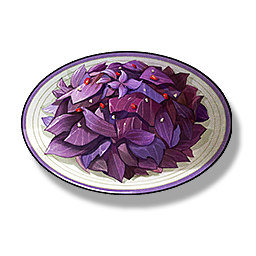

Perilla Salad
Supplies

Increase the Crit. Rate of all Resonators in the team by 10%, lasts 15 minutes, only effective for your own Character in multiplayer games.
A dish used to stave off hunger when supplies are scarce, it has now become a side dish, smooth to the taste.